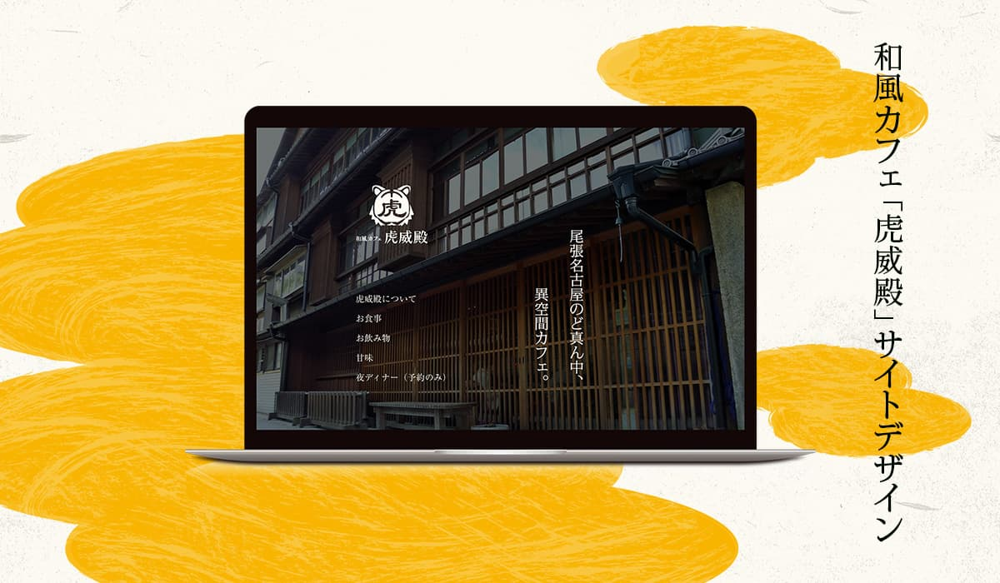

カフェ「虎威殿」サイトデザイン
Webデザイン
架空の和風カフェ「虎威殿」のサイトデザインをしました。
学校課題のもので、一年生後期に作成した作品です。この作品を通じて、Figmaの使い方や、「和風」などざっくりとしたイメージの詰め方を学ぶことができました。
- 制作期間
- 2024年10月〜2024年11月(授業は週３時間)
- 使用ツール
- Illustrator / Photoshop / Figma
- 担当範囲
- 全て
- 作品URL（figmaプロトタイプ）
- https://www.figma.com/proto/GQYEKmWBsQDBg7BMlKHhSi/%E8%99%8E%E5%A8%81%E6%AE%BF%E3%83%87%E3%82%B6%E3%82%A4%E3%83%B3?node-id=1-2&t=22Skm2QoKFS8Pk48-1
制作過程
提示されたお店の概要
今回作成する作品の題材は、以下のように概要が決められていて、これに沿って制作を進めました。
ワイヤーフレーム
紙面にざっくりと書きながらレイアウトを決めていきました。
右から左へ視線が移動する縦書きがあることも考慮しながら、ページ全体の視線移動がなるべく自然になるようにと考えながら作成しました。
デザイン
全体のデザインはFigmaを用いて作成しました。
配色、フォント、デザイン全体については、デザインデータと共に提出した以下の仕様書にまとめています。
写真はフォトショップで色味などを加工しています。
また、バナーや周辺マップ、予約カレンダー、Instagram投稿の背景はIllustratorで制作しました。和紙や筆の質感にこだわって作成しています。
工夫・苦労したところ
figmaのオートレイアウト
この作品を通じて、初めてfigmaを本格的に使用しました。授業で軽く教えてもらったオートレイアウトの機能を使うのに、初めは戸惑いました。ですが。慣れてくると、整った余白を持たせられたり、同じパーツを使いまわして修正も簡単にできたりと、本当に便利です。
製作者コメント
和風で、でも都会の中にあって…といういろいろな要素に悩まされながら制作した作品です。おなじテーマ、素材を使っても、人によって全く違うものができていて、クラスメイトからもたくさん刺激をもらえたなと思っています。